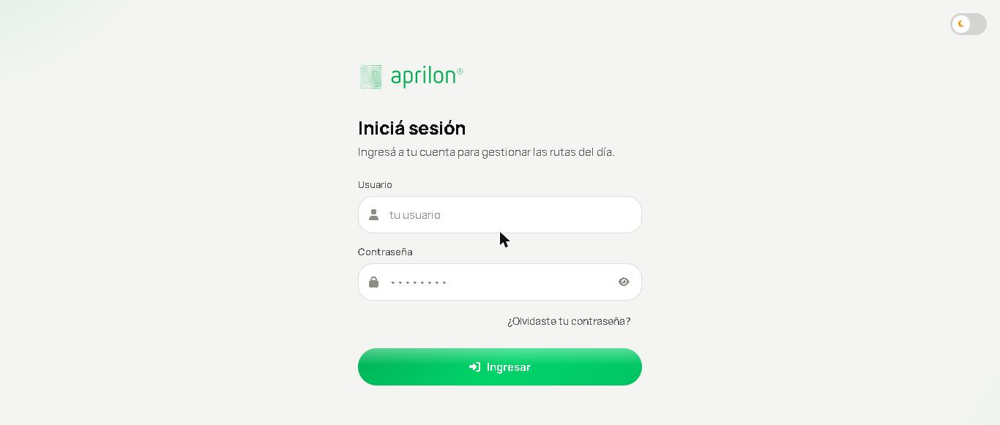
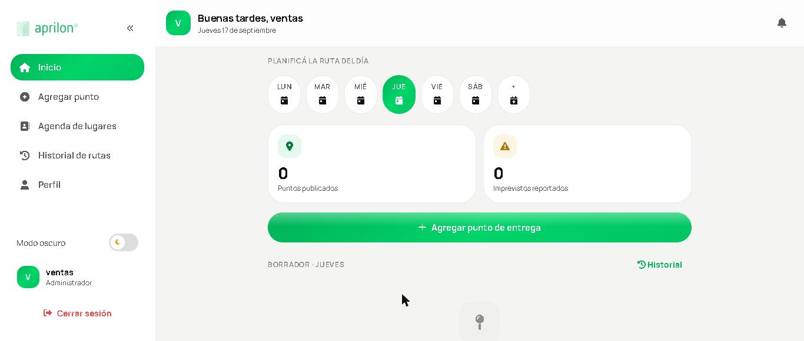
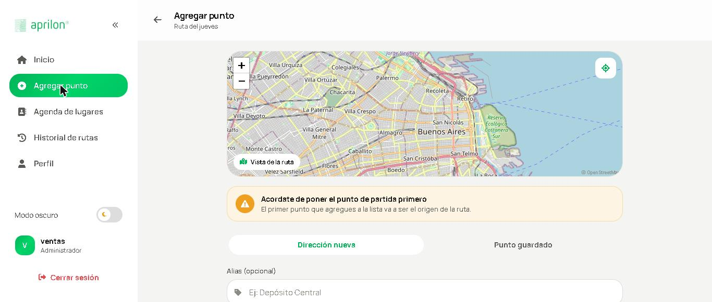
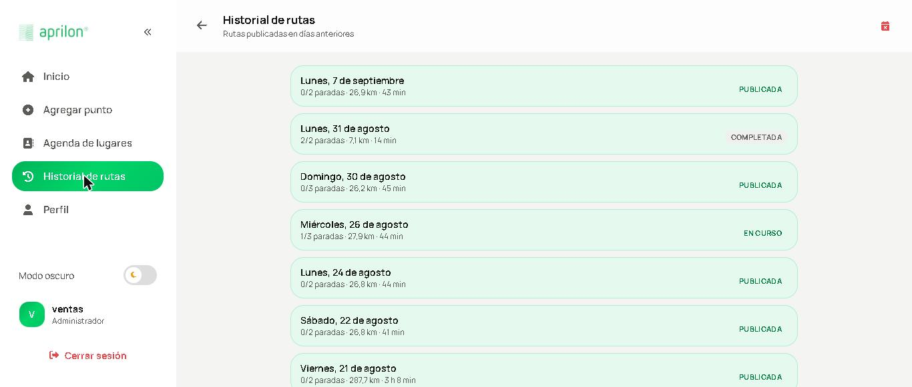
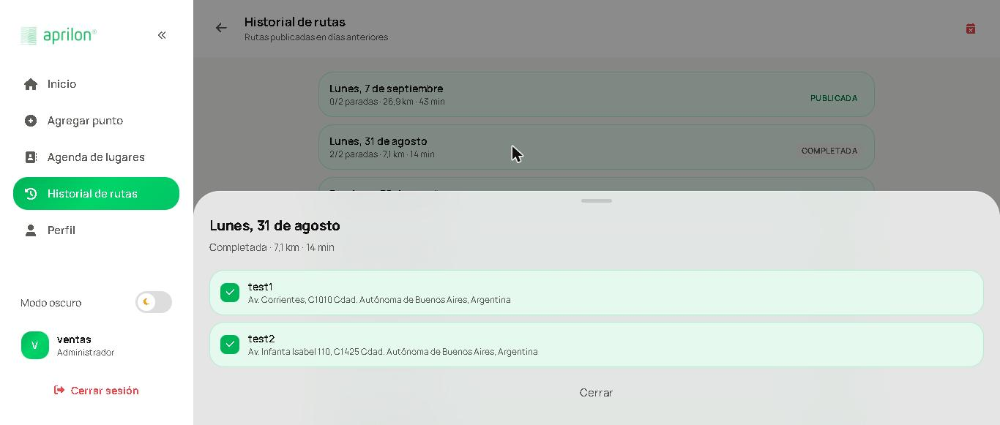
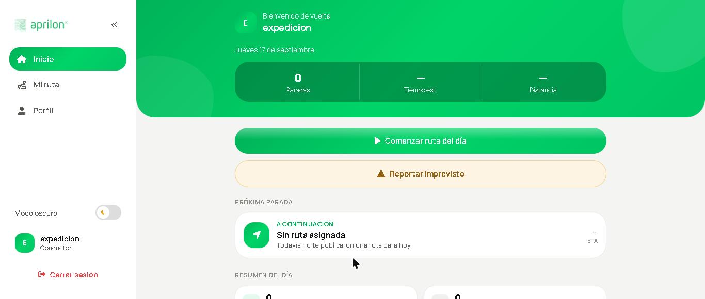
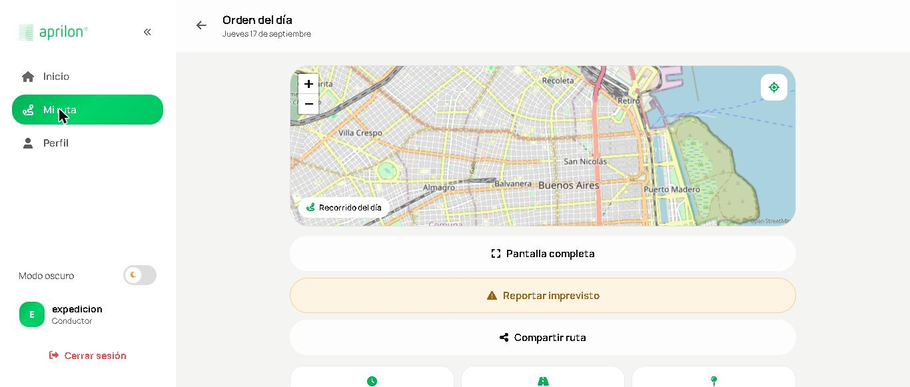
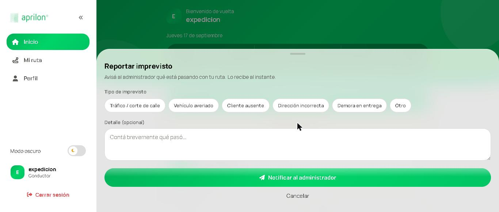

Guía de inicio rápido y Preguntas frecuentes
Documentación de usuario · Secciones s11 y s12 · Versión 1.0 — septiembre de 2026
Guía de inicio rápido
Lo mínimo para publicar tu primera ruta y que el conductor la reciba. Toma unos diez minutos.
Antes de empezar
Configuración inicial (una sola vez)
Si sos quien instala el sistema, necesitás un servidor con PHP 8 y MySQL, importar los tres archivos de db/ en ese orden —aprilon.sql, rutas.sql, incidentes.sql— y completar el archivo .env con la clave de Google y los datos del correo saliente. Si el sistema ya está funcionando, saltá directo al paso 1.
Las tres acciones clave
- Ingresá y reconocé tu rol
Escribí tu usuario y contraseña. El sistema te lleva a la pantalla que corresponde a tu rol: el administrador arma las rutas, el conductor las recorre, el jefe gestiona las cuentas. Si es tu primer ingreso con una clave temporal, el sistema te va a pedir que la cambies.

Pantalla de ingreso. Debajo del botón está el acceso a «¿Olvidaste tu contraseña?». 
Inicio del administrador: el selector de días, los contadores del día y el botón para agregar puntos. - Cargá los puntos de entrega
Entrá a Agregar punto. Escribí la dirección y elegila de la lista que aparece sola mientras tipeás. Si es un cliente al que repartís seguido, guardalo en la agenda con un apodo y la próxima vez lo elegís de la pestaña Punto guardado. Cada punto que agregás aparece en el panel de la derecha.

El primer punto que cargues es el origen de la ruta. 
Alias, dirección y el email de verificación opcional. - Calculá la ruta y publicala
Con dos puntos o más se habilita Calcular ruta óptima. El sistema reordena las paradas para que el recorrido sea el más corto posible y te muestra el camino en el mapa. Si estás conforme, publicala: desde ese momento el conductor la ve en su teléfono.

Cada ruta publicada queda en el historial con sus paradas, distancia y estado. 
Detalle de una ruta: las paradas tildadas son las que el conductor ya entregó.
Al cargar un punto podés escribir el email del destinatario. Al publicar, el sistema le manda una palabra al azar. El conductor va a tener que pedirle esa palabra al entregar para poder marcar la parada como completada: es la prueba de que la entrega ocurrió.
Del otro lado: el conductor
El conductor entra con su usuario y ve la ruta del día ya ordenada. Toca cada parada a medida que entrega y la marca como completada. Si algo sale mal —una calle cortada, un cliente ausente— reporta un imprevisto y el administrador lo ve al instante en su panel.



Listo
Con eso ya tenés el ciclo completo: cargar, calcular, publicar, recorrer y verificar. Todo lo demás —la agenda de lugares, el historial de rutas, las rutas programadas para días futuros, la gestión de usuarios— está explicado en el manual de uso.
Preguntas frecuentes
Respuestas breves a las dudas que aparecen más seguido. Cada una se puede leer por separado.
Acceso
1Me olvidé la contraseña. ¿Qué hago?
Pedí el restablecimiento desde la pantalla de ingreso. El jefe recibe la solicitud y te genera una clave temporal; con esa clave entrás y el sistema te obliga a definir una nueva.


2¿Por qué no puedo crear un segundo administrador?
Porque el sistema admite una sola cuenta de administrador, y esa restricción está impuesta por la base de datos, no por la pantalla. Si necesitás cambiar quién es el administrador, editá la cuenta existente.
3¿Puedo tener varios conductores con rutas distintas?
No. El sistema está pensado para un solo conductor: cualquier ruta publicada la ve quien esté logueado con ese rol. No hay asignación de rutas por persona.

Armado de rutas
4El botón «Calcular ruta óptima» está gris y no puedo tocarlo.
Necesitás al menos dos puntos cargados. Con uno solo no hay recorrido que optimizar. Agregá el segundo y el botón se habilita solo.
5Cargué las paradas en un orden y el sistema me las cambió. ¿Es un error?
No, es la función principal: el sistema reordena las paradas para que el recorrido total sea el más corto posible, considerando además el tráfico del momento.
6¿Cuál es la diferencia entre «Dirección nueva» y «Punto guardado»?
Una dirección nueva se usa solo en la ruta de hoy y no queda en la agenda. Un punto guardado es un cliente frecuente con un apodo, que podés reutilizar cuando quieras.

7El autocompletado de direcciones tarda o no muestra nada.
Escribí al menos unas letras de la calle y esperá un segundo; aparece el indicador «Buscando…». Si no aparece ninguna sugerencia, revisá la conexión del servidor a internet: la búsqueda la resuelve Google, no el navegador.
8Programé una ruta para un día futuro y al recargar la página desapareció la pestaña.
La ruta sigue guardada en el servidor: lo que no persiste es la pestaña del día en pantalla. Volvé a elegir esa fecha en el calendario y reaparece con sus puntos.
9Publiqué una ruta por error.
Podés despublicarla desde el historial de rutas, y el conductor deja de verla. Si quedaron varias rutas duplicadas del día, existe además la opción de borrar todas las rutas de la fecha actual y empezar de cero.
Verificación de entregas
10¿Para qué sirve la palabra de verificación?
Es la prueba de que la entrega se hizo. Al publicar la ruta, el destinatario recibe por email una palabra al azar; el conductor se la pide al entregar y la ingresa en la aplicación. Sin esa palabra, esa parada no se puede marcar como completada.
11¿Se puede mandar la palabra por WhatsApp o SMS?
No. Solo por email. Los otros canales requieren contratar un proveedor externo pago.
12El destinatario no recibió el email.
Revisá la carpeta de correo no deseado y que el email cargado en el punto esté bien escrito. Si nadie recibe los correos, el problema está en la configuración del servidor de salida.
13El conductor ingresa la palabra y el sistema la rechaza.
La palabra es la del último envío: si la ruta se volvió a publicar, la anterior dejó de valer y hay que usar la nueva. Cada intento fallido queda registrado.
En la calle
14El mapa no sigue mi posición.
El seguimiento necesita el GPS encendido y el permiso de ubicación otorgado al navegador. Si lo rechazaste la primera vez, hay que habilitarlo en la configuración del sitio.
15¿Tiene navegación con voz, como un GPS?
Sí, pero se apoya en Google Maps: el botón de pantalla completa abre la navegación paso a paso allí. No existe un servicio de navegación con voz gratuito que pueda funcionar dentro de una página web.
16¿Funciona sin señal?
Parcialmente, y solo si el sistema está publicado con conexión segura (HTTPS): en ese caso el mapa del día queda precargado y se ve sin datos. Sobre una dirección sin HTTPS el navegador no lo permite. Marcar paradas siempre requiere conexión.
17Se me cortó una calle y no puedo llegar a la próxima parada.
Reportá un imprevisto indicando el tipo y el detalle. El administrador lo recibe en el momento, con aviso sonoro, y puede rearmar la ruta si hace falta.
General
18¿Se puede usar para dos empresas distintas?
No. Cada instalación atiende a una sola empresa. Separar los datos de varias empresas requeriría un cambio de fondo en el sistema.
19¿Hay que instalar algo en el teléfono del conductor?
No. Se abre desde el navegador. Conviene guardar la dirección como acceso directo en la pantalla de inicio.
20¿Los datos de los clientes están seguros?
Las contraseñas se guardan cifradas y nunca en texto plano, y las claves de los servicios externos viven solo en el servidor: el navegador nunca las ve.